Leavenworth Climbing
Leavenworth Climbing
And Birthday Party for Kris!
April 25-27, 2003
Kris and I drove to Leavenworth Friday evening. We rented a cabin and were joined by Bob, Mardi, Theron, Peter and Kim for a really fun weekend. It was Kris’s birthday party, and a great climbing fest too.
Also see these fine websites for other versions of the story:
AlpenThyme
TheronWelch
Kris and I drove over Friday late afternoon and checked out the awesome cabin. Bob and Mardi were already there. While they went to get dinner, we went to climb Mountaineer’s Buttress, a real favorite for Kris. We had a good time as usual, and she led a short pitch at the end. We came back, ordered some pizza and set to enjoying our cabin. Great conversation with Bob, Mardi, Peter and Kim. The hot tub was awesome!
The next morning, Peter and I got up early to go climb something. Peter mentioned Canary in an offhand way, but was kind of shocked when I began speeding towards Castle Rock instead of Icicle Canyon! Little did he know that I also really wanted to climb Canary. we gathered his rack and my rope, and soon I was leading the first pitch. It started in a corner, with some decent gear placements under the lip of an overhang. I traversed out to the right on exciting moves, then continued on an easy face to a long steep corner. Here, the climbing got gradually harder as I kept going, passing a few pitons, using finger and hand jams. More jamming led to fixed slings below a large roof. I had to escape through a slot on the right. This was kind of awkward. I ended up hanging from the fixed slings for a minute to think about it. Finally I made the moves and was happy to be on the broad Saber Ledge.
Peter came up, I could hear him say “Wow” and stuff like that now and then. We both had pretty cold fingers and that made it a little harder. His face appeared at the slot, and suddenly he was gone! He had fallen, and was now hanging on the rope a few feet below the slot. It was a scary place to fall! “I think I’m going to throw up,” he said as he made the correct moves and clambered onto the ledge.
Peter cheered up when I volunteered for the next lead (hee hee!), and soon we were having fun again. After the exciting traverse onto an overhanging block I posed in various postures for Peter’s camera because there was an amazing handhold. Tee hee!
This pitch was also really great. I passed a bolt or two, and continued up a steep face with steller exposure. Stepping this way and that, I placed a cam in a horizontal crack now and then. Eventually I came to a ledge where I established a belay. Peter enjoyed the step-across and the rest of the pitch. He took off for the final lead to the top. As I cleaned gear, I thought about what a great climb Canary is!
Tee hee! Okay I’ll stop.
Back at the cabin, we regrouped for a 5 person climb of the R&D Route. Kris, Theron and I climbed it via Cocaine Connection, a fun 5.7 slab climb two pitches in length. We brought the video camera and filmed Peter and Kim on the normal route off to the left. I had to skip a bolt on the first pitch due to a large running water streak. Kris hesitated on a steep section with no handholds, then suddenly trusted her feet to get her over. She especially liked the second pitch. It was easier, and soon we were sitting on a ledge next to Peter and Kim.
“Wha’ happenh?” said Peter, quoting a hilarious line from the new film “A Mighty Wind.” He also said “Wheas my wagon?” to hilarious effect. Soon we were all saying it.
Theron took off to lead the neat chimney pitch, with Kris and Kim following him. Peter and I went for Cocaine Crack. I led up to the crack, climbed about halfway up, and discovered enough water trickling out that I decided not to climb it any further. It was green and slimy inside! “Wha’ happenh?” Peter exclaimed. I lowered off, and we filmed Kris and Kim climbing for a while. Then we climbed the chimney and interupted their girl talk on a ledge. We admired the view for a while, then Peter led the final pitch which is always fun.
We took a wrong turn on the descent, encountering tedious loose ledges and blocks. Soon we were down though.
Theron, Kris and I went to climb Classic Crack a little ways away while Peter and Kim went to the cabin. There was a crowd of people on the route. I established my position in line. Everybody was much cooler than us, and not inclined to shoot the breeze. They had a difficult time, not making it past the lower 15 feet of the climb. A female member of the group ended up with serious cuts on her hands, dripping blood.
“OUCH, that’s GOTTA hurt!!” I said. No I didn’t.
I had never led this climb, only followed it once before with Dan Smith. And I was wearing (you guessed it) “hand jammies.” They really helped me then. Now I settled for tape. It is a really fun climb, with decent rests to place gear from. The hand jams are perfect. I was really happy to arrive at the top and realize how much easier the climb was for me than before.
Kris got on a top-rope and worked hard to climb it. She was stopped by a wide section about 15 feet up. Theron was next, and after several tries, made it past the wide section and finished the climb! He did try laybacking part of it, and soon realized that it is an inferior technique for this kind of crack. Theron belayed me up from the top. I had traded shoes with him, and I found his 5.10 Spires to be rather painful, as they aren’t stiff enough for comfortable foot jamming.
Kris picked us up from the top, and we went to the cabin and began our party. We had all kinds of drinks: wine, cocktails, pina coladas, beer, spetzi. We had Kalbi beef imported from Hawaii, man that was good. Theron made olive-oil biscuits. There was an awesome salad and potatoes. I’m probably forgetting stuff too! We played Metallica’s Orion on 3 acoustic guitars. We had worked hard on that over the last month (Theron, Kris and myself). Sadly, our drunkeness ruined about 1/4 of the song!
Things got kind of hazy, but I remember there was a pinada in the shape of a frog, which was beat mercilessly. “OOOhh, right in the FACE!” said Theron.
We played Halo on the X-box, which absolutely riveted Kris, Peter, Bob and Theron to the screen. Kim and I fell asleep amid the din of shouting! I stumbled off to bed, but surprised an impromptu hot-tub party on my way. Good times!
The next morning, we got up kind of late even though I’d been promising to go for a morning climb. Theron had never climbed Midway, but really wanted to, so after talking about it briefly we decided to race out there and back.
Theron led the first pitch when I didn’t trust my shoes for friction at the start. (Probably seeing him thrutch around in them to attempt a layback the day before had eroded my confidence!) He did really well. I set off for the next one, taking the “Midway Direct” route, which goes straight up from the belay rather than into a fissure on the right. This was really fun! I passed several ancient pitons, finding the protection good and the climbing enjoyable. I belayed Theron up from the summit. He whooped at key points, such as some fun rightward traverses.
We hurried down, closed up the cabin (sniff), and all went to Peshastin. Bob and Mardi were already there hiking around. I tried to climb the Tunnel Route on Orchard Rock, but was stymied by a hard move from a ledge after the tunnel. I belayed Kim up to my gear belay, then lowered her off another way. She didn’t like the route very much. Nobody else wanted to climb it, so I gathered my gear and downclimbed.
Next, Kris and Theron climbed Martian Diagonal, with Kim and I on their heels. Peter filmed the whole thing from various points on the trail to the side. We climbed it in three fun pitches, having a grand old time!
Then we went to Heidelburger’s in honor of Aidan (it’s his favorite place to eat) and ate some good food. Peter and Kim decided to head home. Theron, Kris and I went to climb Gibson’s Crack (5.5) in Icicle Canyon. This is a pretty neat climb. Kris didn’t like it that much though, but she climbed it anyway!
We walked over to Mountaineer’s Buttress to end our trip. Kris led the first pitch this time, she did it really well! Her cam placements were excellent. Theron led the second pitch and I got some pictures. I led the final easy scramble. We climbed on one 60 meter rope, and I wore tennis shoes for the climb. We hiked down as the sun began to set.
Kris said it was her favorite birthday ever. Thanks to Theron, Kim, Peter, Mardi and Bob for making it so great!!
</td>
<td width=”30%” valign=top>
|
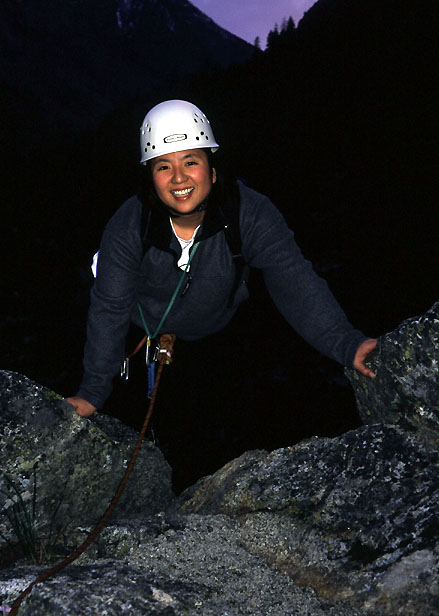 Kris tops out on Mountaineer's Buttress. |
|
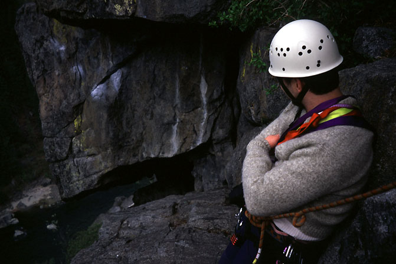 Peter thinking about life as a Canary. |
|
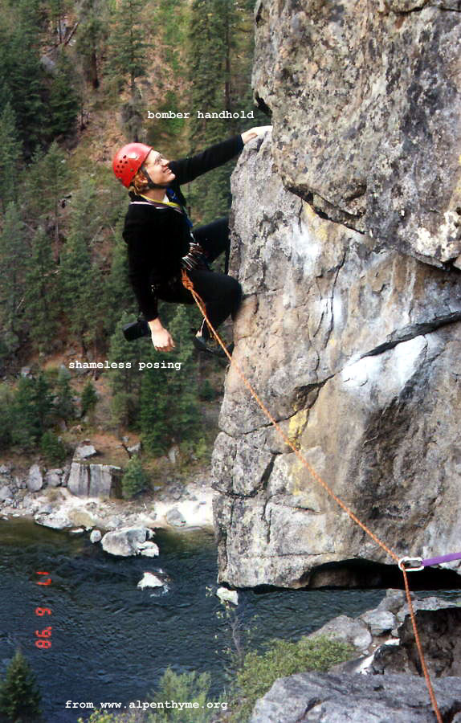 Michael preening on Canary. |
|
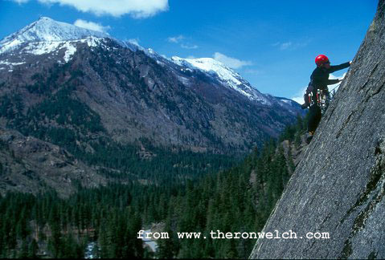 Michael attempting to climb Cocaine Crack. |
|
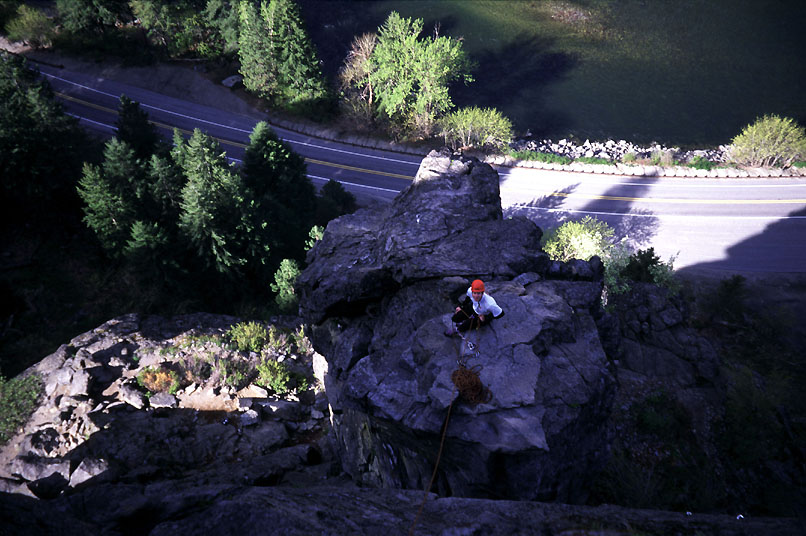 Theron belays on Midway Direct. |
|
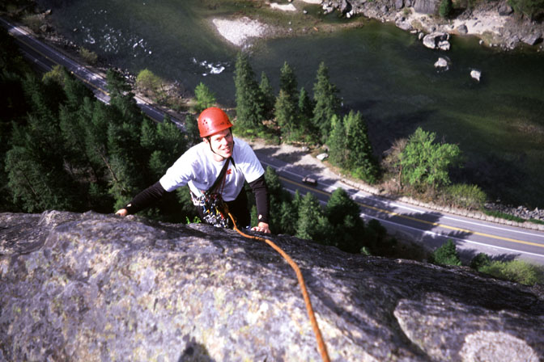 Theron tops out on Midway Direct. |
|
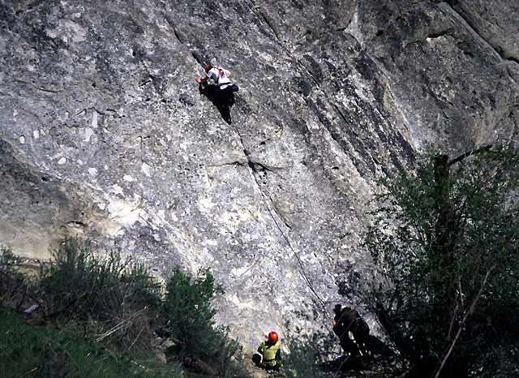 Theron starts Martian Diagonal. |
|
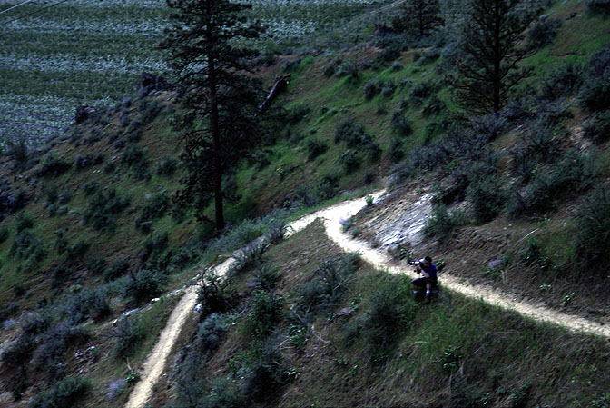 Peter filming at Peshastin. |
|
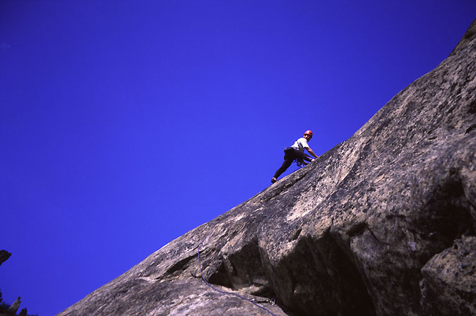 Theron on Martian Diagonal. |
|
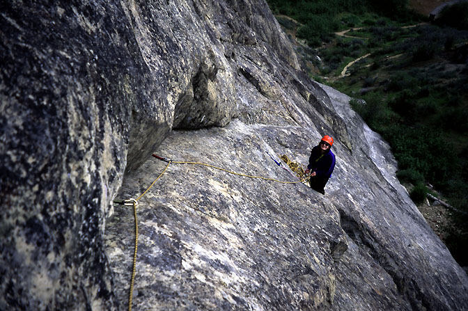 Kim on Martian Diagonal. |
|
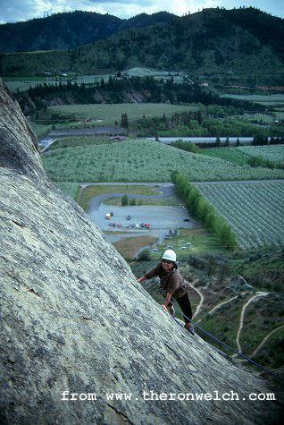 Kris on Martian Diagonal. |
|
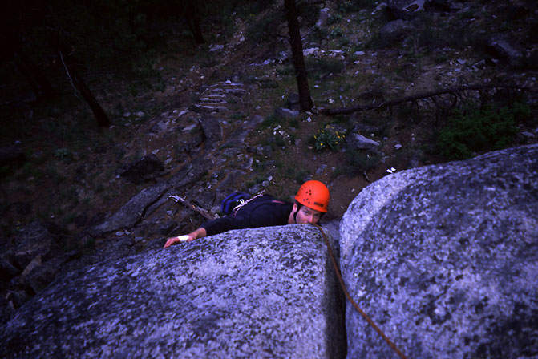 Theron tops out on Gibson's Crack. |
|
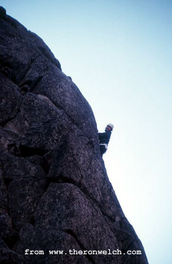 Kris leading on Mountaineer's Buttress. |
{kind=link}
{kind=link}
{kind=link}
{kind=link}
{kind=link}
{kind=link}
{kind=link}
{kind=link}
{kind=link}
{kind=link}
{kind=link}
{kind=link}
{kind=link}